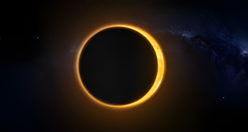

Le mercredi 12 août 2026, l'ombre de la Lune a balayé l'Arctique, le Groenland, l'Islande puis le nord de l'Espagne, offrant à l'Europe continentale sa première éclipse solaire totale depuis 1999. Près d'un demi-million de touristes se sont massés le long de la bande de totalité pour un peu plus de deux minutes d'obscurité en pleine après-midi, un spectacle qui a viré au coucher de soleil spectaculaire au-dessus des Baléares.
L'éclipse débute au-dessus de la péninsule sibérienne de Taïmyr, puis remonte vers l'océan Arctique où elle frôle le pôle Nord à quelques dizaines de kilomètres. La trajectoire de l'ombre lunaire redescend ensuite plein sud, traverse l'est du Groenland, puis l'ouest de l'Islande — où Reykjavik se trouve dans la bande de totalité — avant de franchir l'Atlantique Nord pour atteindre la Galice, en Espagne, en fin de soirée locale. L'éclipse s'achève au coucher du soleil au-dessus des îles Baléares. Survenant deux jours seulement après le passage de la Lune au plus près de la Terre (périgée), le phénomène bénéficie d'un disque lunaire particulièrement large, ce qui explique une totalité relativement longue pour ce type d'éclipse à haute latitude.
Il s'agit de la première éclipse solaire totale visible depuis l'Europe continentale depuis le 11 août 1999. Elle appartient à la même famille (le cycle de Saros 126) que d'autres grandes éclipses historiques et sera suivie, presque exactement un an plus tard, par celle du 2 août 2027 — qui touchera le sud de l'Espagne et l'Afrique du Nord avec une totalité record de plus de six minutes.
Le nord de l'Espagne a connu un afflux touristique exceptionnel : Bilbao, Burgos, León, Valladolid, Saragosse, Valence et Majorque se trouvaient toutes dans la bande de totalité. Les autorités espagnoles avaient mis en place plus de 660 points d'observation officiels rien que dans le nord du pays, notamment autour de Burgos, où plusieurs milliers de personnes se sont rassemblées. Dans certaines villes, les prix de l'hébergement ont fortement augmenté face à la demande, avec près d'un million de nuitées disponibles entre hôtels, campings et locations rurales pour absorber le flux de visiteurs.
« Un grand événement, aux dimensions scientifiques et culturelles. »
— Jordi Hereu, ministre espagnol de l'Industrie et du TourismeEn Islande, la totalité a balayé la façade occidentale du pays — Hornstrandir, la péninsule de Snæfellsnes, Reykjavik puis la péninsule de Reykjanes — entre 17h43 et 17h50 UTC, pour une durée totale d'un peu moins de sept minutes sur l'ensemble du territoire traversé. L'éclipse maximale, avec 2 minutes et 18 secondes de totalité, s'est produite au large des côtes ouest islandaises, le Soleil culminant alors à seulement 25,8° au-dessus de l'horizon. L'ombre a ensuite parcouru l'Atlantique Nord en une trentaine de minutes avant d'atteindre le nord-ouest de l'Espagne vers 18h26 UTC, où le Soleil, déjà très bas, n'atteignait plus que 10° d'altitude sur la côte, et à peine 2,8° au-dessus de Majorque.
En dehors de la bande de totalité, l'éclipse a été observée sous forme partielle dans une grande partie de l'hémisphère Nord : au Canada, dans le nord des États-Unis, dans la quasi-totalité de l'Europe — Londres, Rome, Paris ou encore Saint-Pétersbourg — ainsi qu'en Afrique du Nord-Ouest, offrant à des millions de personnes un aperçu du phénomène même loin du cœur de la totalité.
L'ombre de la Lune touche la Terre au-dessus de l'océan Arctique, au nord-est du Groenland.
La totalité traverse l'ouest de l'Islande, de Hornstrandir à la péninsule de Reykjanes, en passant par Reykjavik.
Éclipse maximale au large de l'Islande : 2 minutes et 18 secondes de totalité, le pic de tout l'événement.
La totalité atteint la Galice, au nord-ouest de l'Espagne, avant de progresser vers la Castille-et-León.
L'éclipse s'achève au coucher du soleil au-dessus des îles Baléares, dont Majorque, dernier territoire traversé.
Pendant quelques minutes, des paysages aussi différents que la toundra arctique, les volcans islandais et les collines de Castille ont partagé la même obscurité soudaine en plein après-midi — un rappel que ces alignements, bien que prévisibles au geste près par les astronomes, restent une expérience rare à vivre depuis un même endroit. Il aura fallu 27 ans à l'Europe continentale pour en retrouver une.
La prochaine occasion ne se fera pas attendre aussi longtemps : le 2 août 2027, une éclipse totale traversera le sud de l'Espagne, le Maroc, l'Algérie et l'Égypte avec plus de six minutes de totalité, la plus longue du siècle. Mais pour un ciel totalement obscurci depuis la France métropolitaine, il faudra en revanche patienter jusqu'au 3 septembre 2081.